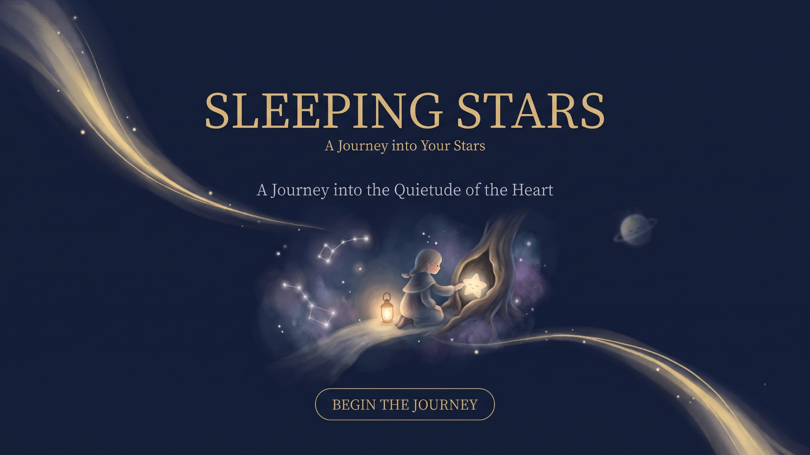

Follow the quiet pull of your intuition.
Each star you choose becomes part of a constellation that belongs only to you.
Choose the words that resonate with your heart.
The more stars you find, the more your unique constellation begins to glow.
Your stars are hidden within these words.
Choose what feels close to you right now — whatever lingers in your heart. The more stars you find, the more your constellation takes shape.
Stars found: 0
YOUR CONSTELLATION
You can also enjoy the constellation cats as LINE stickers.